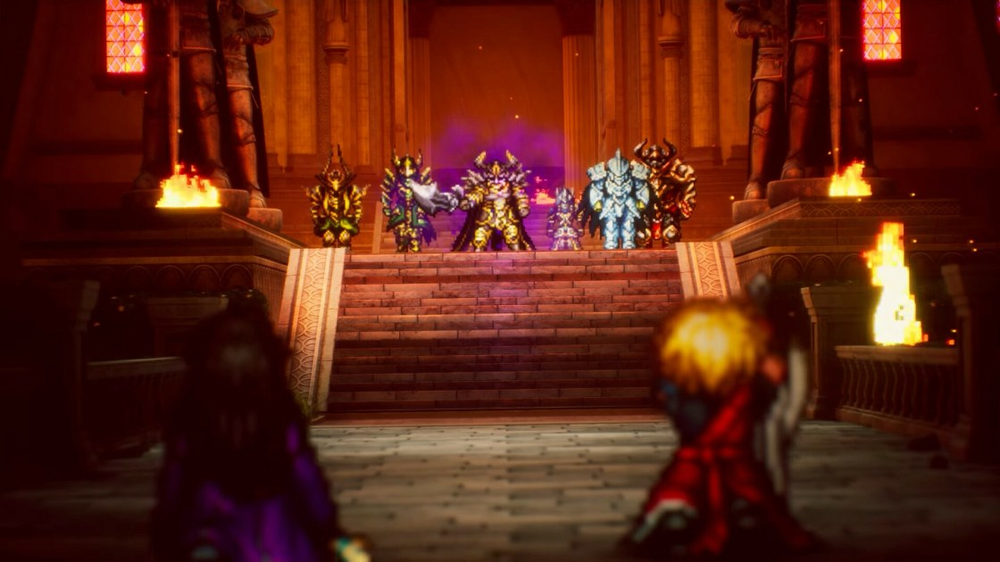

《Final Fantasy Resonance》以動態鏡頭與像素化 3D 打造電影式像素美術
團隊把 3D CG 轉成像素影像，並以動態攝影機、燈光、景深、Bloom 與逐鏡調整的角色朝向，讓像素角色能在 3D 場景中演完整事件。

製作案例 ★★★★☆
完整分析
電影式像素技術流程
環境先由概念圖與簡易 3D 地形確立尺度、動線和攝影機，再配置資產並以燈光統整；大型召喚物與飛空艇則由 3D CG 轉為像素表現。
角色與鏡頭製作影響
所有視覺以移動鏡頭為前提，角色會依觀看角度微調朝向；事件鏡頭不足時甚至重畫像素圖，避免角色看似浮空或陷入地面。
品質限制與創作判斷
完整像素事件耗時，團隊也曾因懷舊感而容忍品質妥協，最後才重新修整；燈光、景深與 Bloom 另用來融合二維角色和三維背景，因此懷舊被當作靈感，而不是降低完成度的理由。
BRIEF｜來源已驗證；證據深度較有限，完整分析會明確區分已知資訊與待驗證事項。